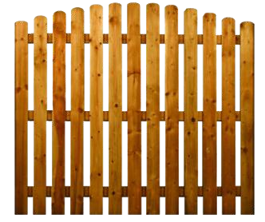
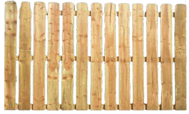

Family craftsmanship · Est. 1994
Boundaries built to belong.
Thoughtful timber fencing that brings privacy, character, and lasting value to the place you call home.

◇Responsibly sourced certified timber
⌂Built locally by skilled installers
◷Clear timelines from quote to finish
Signature collections
Three ways to make
the garden yours.
A considered edit of our most-loved profiles—each one customizable in height, finish, and detail.

Built one garden at a timeHow we work
Good fences start with good listening.
Every project begins with your home, your needs, and the way you want to use your outdoor space. We combine that understanding with proven materials and careful installation.
- 01Friendly site visit
We measure, assess the ground, and talk through your ideas.
- 02Clear, detailed quote
No hidden extras—just materials, labour, and timing in plain language.
- 03Considerate installation
A tidy, skilled crew and a result made to stand the seasons.
“
From the first sketch to the final post, Lark made the whole project feel simple. The fence looks like it has always belonged here.
Joanne M.Homeowner · Cedar Grove
Your garden, reimagined